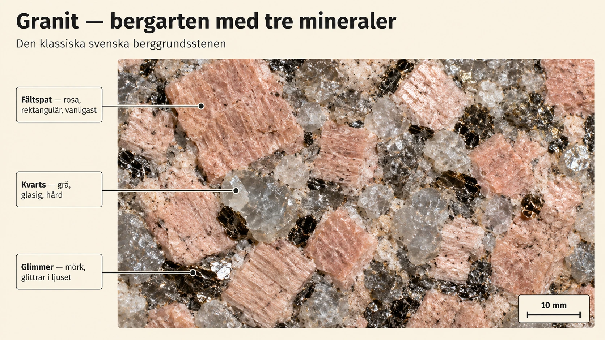
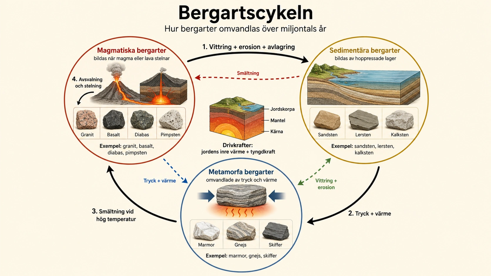
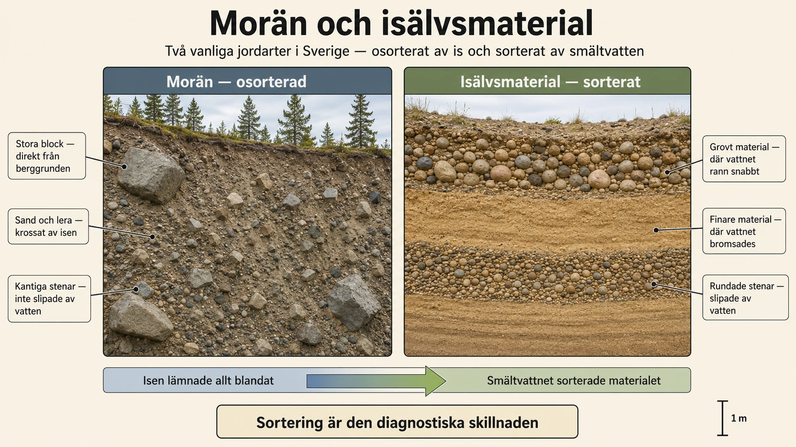
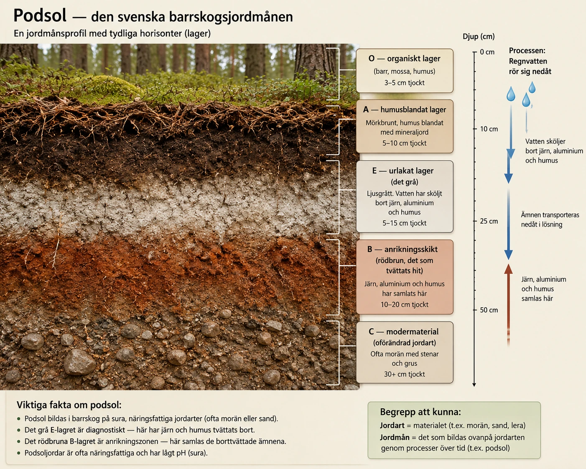

Jordytan
— mineraler, bergarter, jordarter och jordmåner —
Från krafter till material
I de senaste avsnitten har vi sett krafterna som formar jordytan — vittring som spräcker berg, erosion som transporterar material, sluttningsprocesser som flyttar berg och jord nedåt. Nu vänder vi blicken och frågar oss något annat: vad är det egentligen som formas och flyttas? Vad består själva jordskorpan av?
Svaret bygger en hierarki — som en pyramid där varje nivå består av nivån under. Allra nederst finns mineraler, de minsta byggstenarna. Mineraler bygger upp bergarter, som är de större enheterna vi kallar "berg". När bergarterna vittras och bryts ner bildas jordarter — det lösa material som ligger ovanpå berggrunden. Och allra överst, på toppen av jordarterna, utvecklas jordmåner — det levande, organiska lagret där växter har sina rötter och där våra åkrar och skogar finns.
I detta avsnitt går vi igenom alla fyra nivåer i tur och ordning. Vi börjar med det minsta — mineralerna.
Mineraler — bergarternas byggstenar
När vi tittar på en sten ser den ofta ut som ett enda hårt material. Men de flesta stenar och bergarter består egentligen av flera olika mineraler. Ett mineral är ett naturligt ämne som finns i jordskorpan. Mineraler har en bestämd kemisk sammansättning och en viss kristallstruktur — det betyder att ämnets små delar sitter ordnade på ett särskilt sätt.
Man kan säga att mineraler är bergarternas byggstenar. På samma sätt som en vägg kan vara byggd av tegelstenar, kan en bergart vara byggd av olika mineraler. Vissa bergarter består nästan bara av ett mineral, medan andra består av flera olika mineraler — som granit, som vi snart ska titta närmare på.
De vanligaste mineralerna i jordskorpan är mineral som innehåller mycket kisel och syre. Det beror på att dessa ämnen är vanliga i jordskorpan. Tre mineraler är extra viktiga att kunna eftersom de tillsammans bygger upp granit — Sveriges kanske mest kända bergart: fältspat, kvarts och glimmer.

Fältspat — den vanligaste
Fältspat är det vanligaste mineralet i hela jordskorpan. Det finns i många bergarter, men är särskilt vanligt i granit. Fältspat kan ha olika färger — vitt, rosa, rödaktigt eller grått. När man tittar på en svensk granit är det ofta fältspaten som ger stenen dess ljusa eller rödaktiga färg. Klassisk svensk granit har ofta rosa-röd fältspat.
Fältspat är ganska hårt, men det kan ändå brytas ner genom vittring. När fältspat vittrar kan det bildas lermineral — vilket betyder att fältspat på lång sikt bidrar till att jord och lera bildas. Den hårda graniten under våra fötter är på väg att bli leran i nästa generations odlingsmark — fast bara över hundratusentals år.
Kvarts — den hårda
Kvarts är ett mycket hårt mineral. Det är ofta glasaktigt och kan vara genomskinligt, vitt, grått eller lite rökfärgat. I granit syns kvarts ofta som små grå eller glasiga korn bredvid den ljusare fältspaten.
Kvarts är viktigt av två skäl. Det är extremt motståndskraftigt mot vittring — det är ett av få vanliga mineraler som inte bryts ner i normalt klimat. När bergarter bryts ner kan kvartsen ligga kvar som små sandkorn. Mycket av sanden på stränder och i sandiga jordarter består därför av kvarts. Det andra skälet är att kvarts har en mängd industriella användningar — från glasframställning till mobiltelefonchips. Vi återkommer till det i fördjupningen.
Glimmer — den glittrande
Glimmer är ett mineral som ofta ser blankt eller glittrigt ut. Det kan vara svart, mörkbrunt eller silverfärgat. Glimmer har en särskild egenskap: det kan dela sig i tunna skivor eller fjäll. Därför ser det ibland ut som små blanka flagor i en sten.
I granit finns glimmer ofta som små mörka prickar — och även om glimmer inte är lika vanligt som fältspat och kvarts är det viktigt för att känna igen granit. Det är de små svartglittrande prickarna mellan de rosa och grå kornen.
Att känna igen granit
När man ska känna igen granit kan man därför tänka: granit är en prickig bergart där man ofta kan se olika mineraler bredvid varandra. Det beror på att granit har bildats djupt nere i jordskorpan där smälta bergarter har svalnat mycket långsamt. Då har mineralerna hunnit växa till stora, tydliga kristaller — så stora att man kan se dem med blotta ögat.
Granit är inte ett mineral — det är en bergart som består av flera mineraler tillsammans. Men det betyder att den är ett perfekt exempel på hur mineraler bygger upp bergarter. När du nästa gång ser en granitsten — i ett berg, i en husfasad eller i en stenmur — titta på närbilden och försök hitta alla tre: den rosa fältspaten, den glasiga kvartsen, de mörka glimmerprickarna. Du tittar då på Sveriges mest grundläggande geografi.
I nästa underdel går vi vidare från mineraler till bergarter — och tittar närmare på hur granit (och alla andra bergarter) bildas.
Från krafter till material
- I detta avsnitt: vad jordskorpan består av
- Hierarki: mineraler → bergarter → jordarter → jordmåner
- Mineraler är de minsta byggstenarna
- Jordmåner är det översta levande lagret
I tidigare avsnitt har vi sett krafterna som formar jordytan — vittring, erosion, sluttningsprocesser. Nu tittar vi på själva materialet — vad jordskorpan består av.
Det bildar en hierarki: mineraler är minsta byggstenarna, de bygger upp bergarter, som bryts ner till jordarter, varovan jordmåner utvecklas.
Vad är ett mineral?
- Ett mineral = naturligt ämne i jordskorpan
- Har bestämd kemisk sammansättning
- Bygger upp bergarter (som tegelstenar bygger en vägg)
- Vanligaste mineralerna innehåller kisel och syre
Ett mineral är ett naturligt ämne som finns i jordskorpan. Mineraler har bestämd kemisk sammansättning och kristallstruktur — deras små delar sitter ordnade på ett särskilt sätt.
Mineraler är bergarternas byggstenar. På samma sätt som tegelstenar bygger upp en vägg, bygger mineraler upp bergarter. Tre viktiga svenska mineraler: fältspat, kvarts, glimmer.
Lägg märke till:
- Rosa-rödaktiga rektangulära korn = fältspat (vanligast)
- Grå-vita glasiga korn = kvarts (hård)
- Mörka glittrande prickar = glimmer
- Mineralerna ligger bredvid varandra, alla synliga
Fundera: Varför är granit "prickig"?
Fältspat — den vanligaste
- Det vanligaste mineralet i jordskorpan
- Färger: vitt, rosa, rödaktigt, grått
- Vid vittring blir det till lermineral
- Den ger granit dess rosa-röda färg
Fältspat är det vanligaste mineralet i jordskorpan. Den finns i många bergarter, särskilt granit. Färgerna varierar — vitt, rosa, rödaktigt eller grått. När fältspat vittrar bildas lermineral, så fältspat bidrar på lång sikt till att jord bildas.
Kvarts — den hårda
- Mycket hårt mineral
- Glasaktigt utseende — genomskinligt eller grått
- Motståndskraftigt mot vittring
- Sand på stränder = ofta kvarts
Kvarts är ett mycket hårt mineral. Det är glasaktigt och kan vara genomskinligt, vitt eller grått. I granit syns kvarts som små grå eller glasiga korn. Kvarts är extra viktigt eftersom det motstår vittring — när bergarter bryts ner ligger kvartsen kvar som sandkorn. Mycket av sanden på stränder är därför kvarts.
Glimmer — den glittrande
- Blankt och glittrigt utseende
- Färger: svart, mörkbrunt, silverfärgat
- Kan dela sig i tunna skivor
- Mörka prickarna i granit = glimmer
Glimmer ser blankt eller glittrigt ut — svart, mörkbrunt eller silverfärgat. Det kan dela sig i tunna skivor. I granit syns glimmer som små mörka prickar. Det är de små svartglittrande prickarna mellan de rosa och grå kornen.
Att känna igen granit
- Granit är en bergart, inte ett mineral
- Den är prickig — flera mineraler bredvid varandra
- Bildades djupt i jordskorpan — kristallerna hann växa stora
- Du ser den i berg, husfasader, stenmurar i hela Sverige
Granit är inte ett mineral — den är en bergart som består av flera mineraler. När du ska känna igen granit kan du tänka: granit är en prickig bergart. Det beror på att den bildats djupt nere i jordskorpan där smälta bergarter svalnat långsamt, och mineralerna hunnit växa till stora kristaller.
I nästa underdel går vi från mineraler till bergarter.
Att testa ett mineral — geologens verktyglåda
För en otränad ögonblicksbild ser de flesta mineraler ut ungefär likadana — grå-vita-bruna stenar. Men för en geolog finns ett antal enkla tester som kan identifiera ett mineral med ganska hög säkerhet. Dessa tester använder geologer ute i fält, ofta bara med fingrarna och några enkla verktyg. De är så pedagogiskt enkla att de fungerar bra i klassrummet.
Färgen är det första man tittar på, men ofta det minst pålitliga. Ett mineral kan ha olika färger beroende på små inblandningar av andra ämnen. Kvarts kan vara genomskinligt (bergkristall), violett (ametist), rosa (rosenkvarts) eller mjölkvitt — men det är fortfarande samma mineral. Geologer säger därför att färg är "första intrycket men sista beviset".
Glansen är mer pålitlig. Mineraler kategoriseras efter hur de reflekterar ljus. Kvarts har glasglans. Glimmer har pärlemorglans eller silkesglans. Metallmineraler som svavelkis har metallglans. Genom att vrida en sten i ljuset kan en geolog ofta se direkt vilken typ av glans materialet har.
Hårdheten är ännu pålitligare. Den tyske mineralogen Friedrich Mohs utvecklade redan 1812 en skala från 1 till 10 som geologer fortfarande använder. Talc, det mjukaste mineralet, har hårdhet 1 — man kan repa det med fingernageln. Diamant, det hårdaste, har hårdhet 10. Glas ligger runt 5,5, ett knivblad runt 6, kvarts på 7. Genom att testa om ett mineral kan repa en annan kan man placera det på skalan. Praktiskt test i klassrummet: kan du repa stenen med fingernageln (under 2,5)? Med ett kopparmynt (under 3,5)? Med en kniv (under 5,5)?
Spaltningen är kanske det mest karakteristiska. När mineraler bryts kan de antingen spaltar längs släta plan eller brytas oregelbundet. Fältspat har två tydliga spaltningsriktningar i nästan rät vinkel — det är därför fältspatkorn i granit ser rektangulära ut. Glimmer har EN spaltningsriktning men extremt tydlig — man kan dela en glimmerflagga i tunnare och tunnare skivor med en kniv. Kvarts har INGEN spaltning — det bryts oregelbundet, som glas. Detta är därför kvartskornen i granit ser rundade-glasiga ut medan fältspaten ser kantig ut.
Slutligen finns streck-testet. Om man drar mineralet mot en oglaserad porslinsplatta lämnar det ett färgat streck. Streckets färg är ofta mycket mer pålitlig än mineralets yttre färg. Svavelkis (pyrit) ser ut som guld men har svart streck, medan riktigt guld har gult streck — och det är så man avgör om man hittat en skatt eller inte.
Dessa fem tester — färg, glans, hårdhet, spaltning och streck — räcker för att identifiera de flesta vanliga mineraler. För svenska elever som vandrar i fjäll eller längs kusten är detta verktyg för att läsa landskapet direkt. Nästa gång du hittar en glittrande sten — testa den. Kanske håller du Sveriges geologiska historia i din hand.
Sveriges mineralrikedom — från Falun till framtiden
Få länder har en så lång och rik mineralhistoria som Sverige. Vår berggrund är gammal — i östra och norra Sverige finns berg som är över 1,8 miljarder år gamla, bland de äldsta på jorden. I dessa gamla bergarter har naturen koncentrerat olika mineraler i fyndigheter som människor utnyttjat i tusentals år.
Den mest berömda fyndigheten är förmodligen Falu koppargruva i Dalarna. Under flera hundra år, från 1200-talet till 1900-talets början, producerade Falu gruva en betydande del av all koppar i Europa. Det är från denna gruva som "Falu rödfärg" kommer — den klassiska röda färgen på svenska hus är en biprodukt från kopparutvinningen. Färgen består framförallt av järnoxid och ger samma rödbruna ton som man ser på järnrika lerlager i naturen. När du ser ett klassiskt svenskt rödmålat hus ser du faktiskt en bit av Falu gruvgeologi.
Ett annat klassiskt område är Bergslagen i Mellansverige. Här bröts järnmalm i hundratals år — och järnet förvandlade Sverige. Stora delar av landets industriella revolution byggdes på Bergslagens malm. Städer som Kopparberg, Norberg, Falun och Sala blev rika på utvinning och bearbetning. Mycket av denna verksamhet är borta idag — gruvorna är stängda och städerna har omvandlats — men landskapet bär fortfarande spåren: slaggvarp, övergivna gruvhål, gamla hyttor.
Sveriges största gruva idag är Kiruna järngruva i Norrbotten. Den drivs av LKAB och är världens största underjordiska järnmalmsgruva. Här bryts magnetit — ett järnrikt mineral — på över 1000 meters djup. Malmen exporteras till stålverk över hela världen. Kiruna är så stor att hela staden behöver flyttas — eftersom marken under den gamla stadskärnan håller på att sjunka in i gruvgångarna. En geologisk verklighet som påverkar var människor faktiskt bor.
Och idag står Sverige inför en ny mineralfråga. Den gröna omställningen — elbilar, vindkraftverk, solceller, batterier — kräver mineraler som vi inte tidigare utvunnit i stora mängder: sällsynta jordartsmetaller, litium, kobolt, grafit. Sverige har stora potentiella fyndigheter av flera av dessa. I norra Sverige planeras nya gruvor för att producera dem. Detta är politiskt kontroversiellt — det betyder gruvbrytning i orörd natur och i samerna renbetesområden — men ekonomiskt och tekniskt viktigt. Sveriges mineralhistoria fortsätter, fast med nya mineraler och nya konflikter.
Det som gör Sveriges mineralhistoria fascinerande är hur djupt den är vävd ihop med landets sociala och ekonomiska historia. Falu koppar gav oss husfärgerna. Bergslagens järn gav oss industrin. Kiruna ger oss exporten. Och framtidens mineraler kommer att avgöra om Sverige kan vara med och driva den gröna omställningen. Geologi är aldrig bara stenar — det är samhällets fundament.
Bergarter — jordskorpans större enheter
Vi har sett att mineraler är de minsta byggstenarna. Nu går vi en nivå upp — till bergarter. En bergart är det material som berggrunden består av. Bergarter är uppbyggda av ett eller flera mineraler.
Bergarter kan bildas på mycket olika sätt — i jordens inre, på havsbottnar, eller genom att äldre bergarter förändras under tryck och värme. Därför delas bergarter in i tre huvudgrupper, och dessa grupper berättar framför allt hur bergarten har bildats:
- Magmatiska bergarter — bildas när smält berg stelnar
- Sedimentära bergarter — bildas av hoppressade lager av material
- Metamorfa bergarter — bildas när äldre bergarter omvandlas av tryck och värme
Vi går igenom var och en — och avslutar med bergartscykeln, det stora kretsloppet där en bergart kan bli en annan över miljontals år.
Magmatiska bergarter — från smält berg
Magmatiska bergarter bildas när smält berg svalnar och stelnar. Smält berg som finns nere i jordens inre kallas magma. När magman når jordytan vid ett vulkanutbrott kallas den lava.
Magmatiska bergarter delas in i tre undergrupper beroende på var de stelnar och hur snabbt de svalnar:
Djupbergarter bildas djupt nere i jordskorpan. Där svalnar magman mycket långsamt — under tusentals år. När avsvalningen går så långsamt hinner mineralerna växa till stora kristaller, så stora att man kan se dem med blotta ögat. Granit är det viktigaste exemplet. Den består av fältspat, kvarts och glimmer, är mycket vanlig i Sverige och syns ofta i berg, klippor och hällar.
Gångbergarter bildas när magma tränger upp i sprickor i berggrunden men stelnar innan den når jordytan. Avsvalningen går snabbare än för djupbergarter men långsammare än för ytbergarter. Diabas är ett klassiskt exempel — den är ofta mörk och hård, och kan finnas som mörka "gångar" eller ådror i ljusare berggrund.
Ytbergarter bildas när lava når jordytan och stelnar snabbt. Eftersom avsvalningen är så snabb hinner kristallerna ofta inte bli stora — ytbergarter är därför finkorniga, ibland glasiga eller porösa. Basalt är den vanligaste — mörk, finkornig, bildas där lava rinner ut, till exempel vid oceanryggar och vulkanöar. Porfyr har en speciell struktur: större kristaller i en finkornig grundmassa, eftersom magman först börjat svalna långsamt och sedan stelnat snabbare. Pimpsten är märkligast av dem alla — bildas vid explosiva vulkanutbrott, innehåller många små hålrum efter gasbubblor, är så lätt att bitar kan flyta på vatten.
Sedimentära bergarter — pressade lager
Sedimentära bergarter bildas av material som samlas i lager. Materialet kallas sediment och kan vara sand, lera, grus, skalrester eller döda växter och djur.
Processen är som följer. Först bryts äldre bergarter ner genom vittring och erosion (precis som vi sett i tidigare avsnitt). Sedan transporteras materialet av vatten, vind eller is. När materialet sjunker till botten i hav, sjöar eller floder bildas lager. Med tiden — ofta miljontals år — pressas lagren ihop av sin egen tyngd. Vatten och mineraler binder ihop kornen. Då bildas en sedimentär bergart.
Det fascinerande med sedimentära bergarter är att de visar tid synligt. Varje lager representerar en period då material avsattes — och om man tittar på en exponerad sedimentär bergvägg ser man landskapets historia skriven nerifrån och upp, lager för lager. De äldsta lagren är längst ner, de yngsta överst.
Exempel på sedimentära bergarter är sandsten, bildad av sand; lersten eller skifferliknande bergarter, bildade av lera; och kalksten, som ofta bildats av skal och rester från havsorganismer. Kalksten är särskilt intressant eftersom den ofta innehåller fossil — rester eller spår av växter och djur från tidigare tidsperioder. Sveriges Gotland och Öland är kända för sin kalksten, och vi tittar närmare på det i en djupdykning.
Metamorfa bergarter — omvandlade av tryck och värme
Metamorfa bergarter kallas också omvandlade bergarter. De bildas när en äldre bergart utsätts för högt tryck, hög temperatur eller båda delarna, utan att bergarten smälter helt. Det är just denna detalj som gör dem unika — om de hade smält skulle de blivit magma och bildat magmatiska bergarter istället.
När en bergart omvandlas kan mineralerna förändras, pressas ihop eller ordnas i nya mönster. Det kan ske djupt nere i jordskorpan, till exempel när bergskedjor bildas och stora bergmassor pressas ihop över miljontals år.
Klassiska exempel på omvandling:
- Kalksten kan omvandlas till marmor — som bevarar sin grundläggande kemi men får en helt annan textur och styrka. Marmor är så vacker att den används i konst och arkitektur.
- Granit kan omvandlas till gnejs — som ser strimmig och randig ut, för mineralerna har pressats i nya mönster.
- Leriga bergarter kan omvandlas till skiffer eller glimmerskiffer — som blir tunna, skivigade och lätt att klyva.
Metamorfa bergarter visar något viktigt: berggrunden är inte stilla och oföränderlig. Den kan förändras under mycket lång tid, även utan att smälta. Sveriges berggrund — som är så gammal — har genomgått otaliga sådana förändringar.
Bergartscykeln — det stora kretsloppet
Allt detta hänger samman i ett kretslopp som vi kallar bergartscykeln. Det är geologins sätt att förklara hur bergarter inte är statiska — de kan förändras från en typ till en annan, om och om igen, under mycket lång tid. Cykeln pågår över miljontals år.
![Cirkulärt processdiagram av bergartscykeln. Tre stora noder placerade i triangel: magmatiska bergarter i röd-orange ton (övre vänster, med vulkan och djupbergart-ikoner), sedimentära bergarter i gul-brun ton (övre höger, med skikt-illustration), och metamorfa bergarter i blå-grå ton (nederst i mitten, med omvandlings-illustration). Pilar mellan noderna med processetiketter: 'Vittring + erosion + avlagring', 'Tryck + värme', 'Smältning vid hög temperatur', 'Avsvalning och stelning'. I centrum syns jordens inre lager med texten 'Drivkrafter: jordens inre värme + ytkrafter'. En diskret tidsskala anger 'Pågår över miljontals år'.](../../img/geologi/bergartscykeln.webp)
En enkel beskrivning av cykeln:
- Magma stelnar → magmatisk bergart bildas (till exempel granit)
- Bergarten vittrar och eroderas — material lossnar och transporteras
- Materialet samlas i lager → sedimentär bergart bildas
- Tryck och värme djupt i jordskorpan omvandlar bergarten → metamorf bergart bildas
- Om temperaturen blir tillräckligt hög smälter bergarten → magma bildas på nytt
- Och så börjar cykeln om
Men cykeln är inte alltid linjär. En magmatisk bergart kan utsättas för tryck och bli metamorf utan att gå via sedimentär. En sedimentär bergart kan smälta direkt till magma utan att bli metamorf först. Det är ett dynamiskt nätverk av möjliga övergångar — drivna av jordens inre värme (som skapar magma och tryck) och jordytans krafter (som vittrar och eroderar).
Det viktigaste att förstå är att bergarter inte bara bildas en gång. De ingår i ett mycket långsamt kretslopp där jordens inre och yttre krafter hela tiden förändrar jordskorpan. Stenen du tar upp i handen idag har resan bakom sig — kanske var det magma för en miljard år sedan, sediment för 300 miljoner år sedan, omvandlat för 50 miljoner år sedan. Och en dag, om miljontals år, kommer den vara något annat igen.
I nästa underdel går vi från bergarter ner i nästa nivå — till jordarter, det lösa material som ligger ovanpå berggrunden.
Vad är en bergart?
- En bergart = det material berggrunden består av
- Bergarter är uppbyggda av ett eller flera mineraler
- Tre huvudgrupper: magmatiska, sedimentära, metamorfa
- Grupperna berättar hur bergarten bildats
En bergart är det material som berggrunden består av. Bergarter byggs av ett eller flera mineraler. De delas in i tre huvudgrupper beroende på hur de bildats: magmatiska (av smält berg), sedimentära (av hoppressade lager), metamorfa (omvandlade av tryck och värme).
Magmatiska bergarter
- Bildas när smält berg stelnar
- Magma = under jorden, lava = ovan jord
- Tre typer: djup, gång, yt
- Långsam avsvalning = stora kristaller (granit). Snabb = små (basalt)
Magmatiska bergarter bildas när smält berg stelnar. Magma är smält berg under jorden; när det når ytan via vulkan kallas det lava.
Tre typer beroende på var de stelnar:
- Djupbergarter — djupt i jordskorpan, långsam avsvalning, stora kristaller. Exempel: granit
- Gångbergarter — i sprickor under ytan. Exempel: diabas
- Ytbergarter — lava som stelnar snabbt på ytan, små kristaller. Exempel: basalt, porfyr, pimpsten
Sedimentära bergarter
- Bildas av material som samlas i lager
- Sediment = sand, lera, grus, skal, döda växter/djur
- Lagren pressas ihop över miljontals år
- Innehåller ofta fossil
Sedimentära bergarter bildas av material som samlas i lager — sand, lera, grus, skal, döda växter och djur. Material bryts ner från äldre bergarter, transporteras av vatten, vind eller is, och avsätts i lager. Lagren pressas ihop över miljontals år.
Exempel:
- Sandsten — från sand
- Lersten — från lera
- Kalksten — från skal och rester av havsorganismer (innehåller ofta fossil)
Metamorfa bergarter
- Bildas av omvandling av äldre bergarter
- Genom tryck, värme eller båda
- Bergarten smälter inte helt — då blir det magma istället
- Mineralerna ordnas i nya mönster
Metamorfa bergarter bildas när äldre bergarter utsätts för högt tryck och/eller hög värme — men utan att smälta helt. Sker djupt i jordskorpan, till exempel vid bergskedjebildning.
Exempel:
- Kalksten → marmor
- Granit → gnejs (strimmig)
- Leriga bergarter → skiffer
Lägg märke till:
- Tre noder i triangel — magmatisk, sedimentär, metamorf
- Pilar mellan dem — visar vad som driver omvandlingen
- Vittring + erosion → från magmatisk till sedimentär
- Tryck + värme → från sedimentär till metamorf
- Smältning → tillbaka till magma
Fundera: Var i cykeln är stenen du sitter på just nu?

Bergartscykeln
- Bergarter kan omvandlas mellan typerna
- Sker under miljontals år
- Drivs av jordens inre värme + ytkrafter
- Bergarter bildas inte bara en gång — det är ett kretslopp
Bergartscykeln beskriver hur bergarter omvandlas mellan typerna över miljontals år. En magmatisk bergart kan vittras och bli sedimentär, sedan omvandlas till metamorf, sedan smälta till magma — och processen börjar om.
Det viktigaste: berg är inte statiska. Stenen du ser idag har en lång historia, och blir något annat i framtiden.
Sveriges berggrund — en av världens äldsta
När du går på en svensk granitklippa går du ofta på något som är otroligt gammalt. Sveriges berggrund hör till de äldsta i världen — och det är inte en överdrift. Stora delar av landets berggrund är mellan 1,8 och 1,9 miljarder år gamla. Jämfört med människans historia (~300 000 år) eller dinosauriernas tid (för 65 miljoner år sedan) är detta nästan ofattbart djup tid.
Sverige ligger på det som geologer kallar Fennoskandiska skölden — en av jordens stabila urbergsregioner. Sköldar är gamla, stabila bergmassiv som varit utanför stora bergskedjebildningar i mycket lång tid. Andra exempel finns i Kanada, Brasilien, Australien och i Afrika. Detta är de gamla "kärnorna" som de yngre kontinenterna sedan vuxit ut från.
Det viktiga med detta är att vår berggrund har överlevt enorma geologiska händelser. Den fanns redan när Pangaea — den gamla superkontinenten — bildades och sedan splittrades. Den fanns innan livet hade utvecklats utanför havet. Den fanns innan dinosaurierna. Och under hela denna tid har den genomgått otaliga vittringscykler, ändå överlevt och stannat kvar som fundamentet under Skandinavien.
Däremot är inte ALLA svenska bergarter lika gamla. Det finns yngre bergarter också. Skånes berggrund är mycket yngre — runt 100-540 miljoner år — och består till stor del av sedimentära bergarter (kalksten, sandsten, lera). Gotland och Öland är ännu yngre med sin kalksten från cirka 400-440 miljoner år sedan (vi tittar på det i djupdykning 2). Och i fjällkedjan finns yngre, omvandlade bergarter som hängdes upp på det gamla urbergsfundamentet när Skanderna bildades för 400 miljoner år sedan.
För svenska elever är detta praktiskt taget bokstavligen under fötterna. Om du bor i Bohuslän, Småland, Värmland eller Norrland står du på urberg som är två miljarder år gammalt. Om du bor i Skåne står du på något tio gånger yngre. Om du går på Gotland står du på fossiler från ett 400 miljoner år gammalt tropiskt hav. Sveriges geografi är ett geologiskt arkiv — och du behöver bara titta på en stenkarta för att se det.
En annan fascinerande aspekt är hur urbergets ålder påverkar dagens landskap. De gamla bergen har eroderats ner under två miljarder år — de är därför inte spektakulärt höga eller dramatiska. Sverige har inga Alperna, inga Himalaya. Vad vi har är ett gammalt, slipat, rundat landskap — utan dramatiska bergskedjor men med extremt djup historia. Det är ett landskap som inte skriker; det viskar.
Bergarterna omkring oss — i hus, monument och vardagsting
Bergarter är inte bara något som finns i berg och klippor — de finns runt omkring oss i vardagslivet. Att lära sig se vilka bergarter som används i byggnader, monument och i vardagliga föremål är ett konkret sätt att förstå geografi som något levande.
Granit är klassisk byggnadssten i Sverige. Riksdagshuset i Stockholm har granitfasad. Stockholms slott innehåller granit i sitt fundament. Många broar och kajer i svenska städer har granitblock som basis. Bohus-granit exporterades på 1800-talet till hela Europa — den användes för att bygga monument från Hamburg till Sankt Petersburg. När man besöker Bohuslän kan man fortfarande se gamla stenbrott där block bröts loss för export.
Kalksten är vanligt i lyxbyggnader. Den användes av romarna för Colosseum och Pantheon. I Sverige finns kalksten i många gamla kyrkor och katedraler — Visby ringmur är kanske det mest spektakulära exemplet, byggd av kalksten direkt från ön under medeltiden. Kalksten är också grundämne i cement — det vi kallar betong består till stor del av sönderbränd kalksten och vatten. Varje gång du går på betong går du på sedimentär bergart från forntidens hav, omvandlad genom värme.
Marmor är kalsten som omvandlats genom värme och tryck — det är den klassiska sten som används i Italiens lyx-byggnader och bildhuggning. Carrara-marmorn från Italien är världens mest berömda, men Sverige har också marmor — Ekeberg-marmorn från Närke har använts i flera svenska statliga byggnader.
Sandsten är vanlig i delar av Tyskland och England men sällsynt i moderna svenska byggnader. Skiffer används som takbeläggning och golvplattor — Norge har stora skifferindustrier, och även i Sverige finns småskalig produktion. Den klassiska "skiffergolv-känslan" — släta, jämna, mörka plattor — är från en metamorf bergart som ursprungligen var lera.
För svenska elever är ett bra sätt att lära sig bergarterna att helt enkelt gå ut och titta. Närmaste stenmur, gravsten, monument, broråring, gatsten — allt har en geologisk berättelse. En gravsten av polerad svart sten är ofta gabbro eller diabas (mörka magmatiska bergarter). En grävsten av rosa polerad sten är klassisk svensk granit. En vit, blek byggnad i sten är ofta kalksten eller marmor. En grå strimmig byggnad är ofta gnejs. När du lär dig de fem-sex vanligaste bergartsutseendena börjar staden bli läsbar — varje byggnad berättar var och när dess sten kom till.
Det är en av geografins finaste insikter: stenen i ditt eget hem kanske är en miljard år gammal och kom från ett urberg eller från botten av ett forntidens hav. Du sitter på, går på och bor i bergarter som har egen historia — det är bara att lära sig läsa dem.
Jordarter — det lösa lagret ovanpå berggrunden
I 8A och 8B såg vi mineraler och bergarter — det fasta som bygger upp jordskorpan. Nu går vi en nivå upp i pyramiden. Ovanpå berggrunden finns ett lager av lösa partiklar som vi kallar jordarter.
En jordart består av sten, grus, sand, silt, lera eller organiskt material — eller en blandning av flera. Det är det material som spaden går igenom när man gräver, det material vägkroppen ligger på, det material rötterna växer i. Jordarterna är på sätt och vis berget halvvägs på sin resa mot jord — pulvriserade bergarter, plus eventuellt biologiska tillskott.
De flesta jordarterna i Sverige har bildats under eller efter den senaste istiden. Under istiden täcktes nästan hela Sverige av en tjock inlandsis. Isen rörde sig långsamt över landskapet, slet loss material från berggrunden, och krossade det till mindre bitar. När isen sedan smälte lämnades materialet kvar — antingen där isen tappade det, eller transporterat vidare av smältvatten, hav och sjöar. Därför är många svenska jordarter starkt kopplade till istiden, och varje jordart berättar något om var och hur den bildades.
![Pedagogisk dubbel-bild av två svenska jordarter. Vänster panel visar morän - en tvärsnittsprofil med en kaotisk blandning av stora stenblock, medelstora stenar, grus, sand och lerigt finmaterial, alla blandade utan sortering. Höger panel visar isälvsmaterial - en liknande profil men med tydliga skikt: grovt grus i ett lager, sand i nästa, finare grus i ytterligare. Stenarna i isälvsmaterial är rundade av vatten. En pil mellan panelerna förklarar: 'Isen lämnade allt blandat' vs 'Smältvattnet sorterade materialet'.](../../img/geologi/moran-profil.webp)
Morän — Sveriges vanligaste jordart
Morän är den vanligaste jordarten i Sverige — den utgör cirka 75% av landets yta. Den bildades direkt av inlandsisen. När isen rörde sig över landet plockade den upp sten, grus, sand, silt och lera. När isen sedan smälte blev allt detta blandade material liggande kvar.
Morän är därmed en osorterad jordart. Det betyder att stora och små partiklar ligger blandade om vartannat — det kan finnas allt från meterstora flyttblock till mikroskopiskt fin lera i samma mark. Detta är pedagogiskt diagnostiskt: när du gräver i marken och hittar en kaotisk blandning av material i alla storlekar är det troligtvis morän. När du hittar tydligt sorterade lager är det något annat.
Stenarna i morän är ofta kantiga eller halvrundade — krossade av isens passage men inte tillräckligt slipade av vatten för att bli helt runda. Det är ännu ett kännetecken som skiljer morän från vattentransporterade jordarter.
Morän finns i stora delar av Sverige, men är särskilt vanlig i skogslandskap. Många svenska skogar växer på moränmark. Marken är ofta stenig och svår att odla, men fungerar bra för skogsbruk — trädens rötter kan etableras i sprickorna mellan stenarna, och moränens variation håller en del vatten utan att bli vattenmättad.
Isälvsmaterial — sorterat av smältvatten
När inlandsisen smälte rann stora mängder vatten under och framför isen. Detta vatten kallades isälvar. Isälvarna transporterade sand, grus och sten — men med en viktig skillnad jämfört med isen själv: vattnet sorterade materialet efter storlek.
Det grövre materialet, som sten och grus, lades ofta av där vattnet strömmade snabbt. Finare material som sand och silt kunde transporteras längre bort. Resultatet blev en jordart som är sorterad — där olika kornstorlekar ligger i olika lager eller olika områden.
Ett viktigt exempel på isälvsmaterial är rullstensåsar. En rullstensås är en långsträckt rygg av sand, grus och rundade stenar som ofta bildades i tunnlar under isen där smältvatten forsade fram (vi diskuterade detta i avsnitt 6). När isen smälte bort blev materialet kvar som en distinkt ås i landskapet — en geologisk fossil av en istunnel.
Isälvsmaterial är viktigt eftersom det ofta innehåller mycket grundvatten. Sand och grus är genomsläppligt — vatten kan röra sig genom det relativt fritt. Därför fungerar rullstensåsar som naturliga vattenmagasin, och många svenska kommuner hämtar sitt dricksvatten från åsar. Stora delar av Stockholms, Uppsalas och Västerås dricksvatten kommer från åsar som ligger under och nära städerna.
Lera — bildad i hav och sjöar
När inlandsisen smälte var stora delar av Sverige täckta av vatten. Det berodde på att marken hade tryckts ner av den tunga isen, så när isen försvann låg landet ännu inte uppe ur havet. Efter isens avsmältning låg havet betydligt högre upp över land än idag.
I dessa hav och sjöar sjönk mycket små partiklar till botten — så små att de bara kunde sjunka i stilla vatten. Med tiden bildades tjocka lager av lera. När landet sedan höjde sig genom landhöjningen kom dessa lerbottnar upp på land — och det är de gamla lerbottnarna vi idag använder som odlingsmark.
Lera är en finkornig jordart. Den består av mycket små partiklar. Eftersom lerjord kan hålla kvar vatten och näring är den ofta bördig. Därför finns många av Sveriges viktigaste jordbruksområden på gamla lerbottnar. I Sverige är lerjordar vanliga i lågt liggande områden — i delar av Mälardalen, Östergötland, Västergötland och Skåne. Gamla havs- och sjöbottnar har blivit till odlingsmark genom landhöjningen.
I vissa lerområden finns dock den farliga kvickleran som vi diskuterade i avsnitt 7 — lera som plötsligt kan förlora sin hållfasthet. Det är samma material, men under vissa förhållanden uppträder leran helt annorlunda. Bördig odlingsmark och farlig skredmark kan ligga sida vid sida i Västsverige.
Sand och grus
Sand och grus är grövre jordarter än lera. De har större kornstorlek — sand från 0,06 till 2 mm, grus från 2 till 60 mm. Eftersom partiklarna är större finns det större hålrum mellan dem, och därför släpper sand och grus igenom vatten lättare.
Detta gör att sandiga och grusiga jordar ofta blir torrare och mindre näringsrika än lerjordar — vatten och näring rinner snabbt igenom istället för att hållas kvar. Sand och grus kan ha bildats av isälvar, längs stränder, eller genom vågornas bearbetning av äldre material.
Sandiga marker finns på många platser i Sverige. De är lätta att gräva i och bra för byggnation, men svårare att odla på. Många klassiska tallhedar (där tall trivs medan andra träd har svårt) ligger på sand. Och stora sand- och grusförekomster utvinns industriellt för byggändamål — sand och grus är faktiskt en av världens mest använda råvaror i absoluta mängder.
Torv och organiska jordarter
Alla jordarter består inte bara av krossat bergmaterial. Vissa består till stor del av döda växtdelar. Ett exempel är torv, som bildas i våtmarker där växter dör men inte bryts ner helt. Det beror på att marken är blöt och syrefattig — utan syre kan svampar och bakterier inte bryta ner organiskt material effektivt.
Torvmarker och myrar är vanliga i Sverige, särskilt i skogs- och inlandsmiljöer. De är viktiga av flera skäl. De lagrar stora mängder vatten — fungerar som naturliga svampar i landskapet. De lagrar också stora mängder kol, eftersom det organiska materialet inte brutits ner. Om torvmarker dikas ut eller torkas ut frigörs detta kol som koldioxid till atmosfären — vilket gör torvmarker viktiga i klimatdiskussionen.
Sverige har mycket torvmark — totalt cirka 25% av landytan är myr- eller torvmark i någon form. Det är en betydande del av landet, och dessa områden har länge använts på olika sätt. Torv har skördats som bränsle, som odlingsjord, och i isolering.
Jordarter påverkar hur marken används
Det fascinerande med jordarter är hur direkt de påverkar mänskligt liv. Jordarten avgör vad marken kan användas till — och därför var vi bygger, var vi odlar, och var vi hämtar vatten:
- Lerjordar kan vara bra för jordbruk eftersom de håller kvar vatten och näring
- Sandjordar är torrare och mer genomsläppliga — bättre för byggnation än för odling
- Moränmarker är ofta steniga — vanliga för skogsbruk
- Isälvsmaterial är viktigt för grundvatten — vi dricker ofta från åsar
- Torvmarker är viktiga för naturen — och för klimatet
Därför påverkar jordarterna både naturen och människans användning av landskapet. De påverkar var vi odlar, bygger, hämtar dricksvatten och bedriver skogsbruk. Sveriges geografi som vi känner den — med jordbruksslätter i söder, skog i mitten, fjäll i norr — är till stor del en konsekvens av vilka jordarter som landskapet består av.
I nästa underdel går vi den sista nivån upp i pyramiden — till jordmåner, det levande lagret som utvecklas ovanpå jordarterna.
Vad är en jordart?
- En jordart = det lösa material som ligger ovanpå berggrunden
- Består av sten, grus, sand, silt, lera eller organiskt material
- De flesta svenska jordarter bildades under eller efter istiden
- Varje jordart berättar något om hur den bildades
En jordart är det lösa materialet som ligger ovanpå berggrunden. Det är vad spaden går igenom när man gräver. De flesta svenska jordarter har bildats av inlandsisen och dess smältvatten — så Sveriges geografi är till stor del istidens fingeravtryck.
Lägg märke till skillnaden:
- Vänster (morän): kaotisk blandning, alla storlekar tillsammans
- Stenar är kantiga eller halvrundade
- Höger (isälvsmaterial): tydliga skikt efter kornstorlek
- Stenar är rundade — slipade av vatten
Fundera: Hur kan man bara titta på en jord och veta om den transporterats av is eller vatten?

Morän — vanligast i Sverige
- Vanligaste jordarten i Sverige (~75% av ytan)
- Bildades direkt av inlandsisen
- Osorterad — alla storlekar blandade
- Stenar är kantiga, inte rundade
- Vanlig i skogslandskap
Morän är Sveriges vanligaste jordart. Den bildades direkt av inlandsisen — när isen rörde sig plockade den upp sten, grus, sand, silt och lera. När isen smälte blev allt blandat material liggande kvar. Morän är därför osorterad — alla storlekar blandade i samma mark.
Isälvsmaterial — sorterat av vatten
- Bildades av smältvatten från isen
- Sorterat — olika kornstorlekar i olika lager
- Stenar är rundade av vatten
- Innehåller mycket grundvatten
- Exempel: rullstensåsar
Smältvatten från isen transporterade sand, grus och sten — men sorterade materialet efter storlek. Det grova lade sig där vattnet rann snabbt, det fina längre bort. Rullstensåsar är ett klassiskt exempel, och de innehåller mycket grundvatten. Stockholms och Uppsalas dricksvatten kommer från åsar.
Lera — bördig odlingsmark
- Finkornig jordart
- Bildades på havs- och sjöbottnar efter istiden
- Landet höjde sig → lerbottnarna kom upp på land
- Bördig — håller näring och vatten
- Vanlig i Mälardalen, Östergötland, Västergötland, Skåne
Lera är finkornig och bildades efter istiden i hav och sjöar. När landet höjde sig kom de gamla lerbottnarna upp som odlingsmark. Lera är bördig och finns i Sveriges viktigaste jordbruksområden — Mälardalen, Östergötland, Västergötland, Skåne. (I vissa områden kan leran vara kvicklera — farlig för skred, se avsnitt 7.)
Sand och grus
- Grövre än lera
- Släpper igenom vatten lättare
- Ofta torra och näringsfattiga
- Bra för byggnation, mindre bra för odling
Sand och grus har större kornstorlek än lera. De släpper igenom vatten och näring snabbt, så jorden blir torrare. Bra för byggnation men sämre för odling. Klassiska tallhedar växer ofta på sand.
Torv
- Bildas av döda växtdelar i våtmarker
- Syrefattig miljö → växterna bryts inte ner
- Lagrar mycket vatten och kol
- ~25% av Sveriges yta är myr- eller torvmark
Torv består av döda växtdelar som inte brutits ner — i våtmarker är det för blött och syrefattigt. Sverige har mycket torvmark (cirka 25% av ytan). Torvmarker lagrar stora mängder vatten och kol, vilket gör dem viktiga både för naturen och för klimatet.
Jordarter påverkar markens användning
- Lera → jordbruk
- Sand → byggnation, torrare
- Morän → skogsbruk, stenig
- Isälvsmaterial → grundvatten
- Torv → naturskydd, klimat
Jordarten avgör vad marken kan användas till. Sveriges geografi — jordbruksslätter i söder, skog i mitten, fjäll i norr — är till stor del en konsekvens av vilka jordarter som finns. I nästa underdel går vi till jordmånerna — det levande lagret ovanpå jordarterna.
Istidens fingeravtryck — hur jordarten berättar var isen gick
För en geolog är en jordart inte bara material — den är en arkivkälla. Varje jordart berättar nämligen hur den bildades och hur den hamnade just där. Genom att läsa landets jordarter kan man rekonstruera hela istidens händelseförlopp. Det är en av geografins mest fascinerande detektivjobb.
Tänk på det så här: när inlandsisen täckte Sverige under den senaste istiden gick den fram och tillbaka över landet, mil efter mil, under tiotusentals år. Den slet loss bergmassor från norra Sverige och drog dem söderut. Den krossade graniten till sand. Den dumpade material där den smälte. Och när den senare drog sig tillbaka för 10 000 år sedan lämnade den efter sig ett fingeravtryck i jordarterna — en signatur på var den varit och vad den gjort.
De olika jordarterna säger olika saker. Morän säger: "Här rörde sig isen — den lämnade material direkt här." Isälvsmaterial säger: "Här rann smältvatten — det sorterade materialet medan det rann." Lera säger: "Här var det vatten — havsbotten eller sjöbotten under en lång tid efter isen." Varje jordart är en geografisk vittnesbörd.
Det fantastiska är att geologer faktiskt kan lokalisera varifrån moränens material kommer. Om de hittar block av en specifik bergart i moränen — till exempel en speciell ljus granit som bara finns i norra Sverige — vet de att isen rörde sig från norr till söder och tog med sig blocken. Det är så vi vet att flyttblock i Skåne kommer från norra Skandinavien — eftersom blockets bergart matchar berggrunden i norr, inte i Skåne.
SGU — Sveriges geologiska undersökning — har kartlagt jordarterna över hela Sverige genom decennier av arbete. På deras digitala kartor kan vem som helst se vilka jordarter som finns var. Detta är inte bara akademisk kuriosa — det används för stadsplanering, jordbruk, grundvattenutvinning, byggande och miljöbedömning. När någon bygger ett nytt hus i Stockholm konsulterar de SGU:s kartor för att veta vad de gräver i.
För dig som svensk elev kan det vara en pedagogisk övning att titta på SGU:s jordartskartor över ditt eget område. Är du på morän eller lera? Finns det isälvsmaterial i närheten? Var ligger de gamla strandlinjerna efter istiden? När du börjar se kartan över din egen geografi börjar det djupa tidsperspektivet bli konkret — du står på en arkivkälla.
Jordarter som råvara — sand, grus, torv och mer
Jordarter är inte bara material att gräva i — många är också råvaror som mänskligt samhälle är beroende av. Faktum är att vi använder enorma mängder jordarter varje år, ofta utan att tänka på det.
Sand och grus är efter vatten den mest använda naturresursen i världen. Vi använder den i betong (varje kubikmeter betong består till stor del av sand och grus), asfalt, glas, halvledare och mycket annat. Sverige utvinner enorma mängder sand och grus varje år — främst från gamla isälvsavlagringar. Men det är inte en hållbar resurs. Sand och grus av byggkvalitet är begränsat, och globalt sett är "sandkrisen" — bristen på lämplig byggsand — ett växande problem. Ökensand fungerar inte för byggändamål (kornen är för rundade), så bygg-sand måste komma från specifika geologiska miljöer. Att vi i Sverige har gott om istidens isälvsmaterial är en geologisk gåva som vi inte alltid uppskattar.
Lera är råvara för tegel, keramik och porslin. Sveriges gamla tegelbruk — i Helsingborg, Köping, Mälardalens många mindre orter — växte fram där lerresurserna var bäst. Många historiska byggnader i svenska städer är byggda av lokal tegel, vilket gör att en stads "färg" ofta avspeglar de lokala lerförekomsterna. Den röda färgen i Mälardalens tegel kommer av lerans järninnehåll; det gula teglet från andra områden kommer av annorlunda mineralinnehåll.
Torv har en lång historia som bränsle. I delar av Irland och Estland eldas torv fortfarande i värmeverk. I Sverige minskade torvbruket dramatiskt under 1900-talet — torv är klimatmässigt ogynnsam (samma typ av kol som kol och olja, men ofta beskattat och hanterat annorlunda). Idag används svensk torv främst som växtjord — den blandning av torv, mineraljord och näring som finns i alla blompåsar på trädgårdsbutikerna. Mycket av Sveriges torvskörd går till växtjordsindustrin.
Sällsynta jordarter är något helt annat — det är inte jordarter i den geologiska bemärkelsen utan en grupp grundämnen som är viktiga för modern teknologi (vindkraftverk, mobiltelefoner, elbilar). Trots namnet är de inte alla särskilt sällsynta, men de är svåra att utvinna. Sverige har potentiella fyndigheter — bland annat i Norra Kärr i Småland och i Norra Sverige — som kan bli viktiga i den gröna omställningen.
När du nästa gång ser ett betongbygge, ett tegelmurat hus, en påse blomjord eller din mobiltelefon — kom ihåg att alla har sina rötter i Sveriges geologi. Jordarterna är inte bara mark — de är ekonomi, infrastruktur och teknologi.
Jordmåner — det levande lagret
Vi har sett pyramiden ta form: mineraler bygger upp bergarter, bergarter vittras till jordarter. Nu kommer den sista nivån — det översta, mest levande lagret. Jordmånen är den övre delen av marken där växter växer och där organiskt material blandas med mineraljord.
Det är viktigt att förstå att jordmån inte är samma sak som jordart. Jordarten handlar om vilket löst material marken består av — morän, sand, lera, torv. Jordmånen handlar om hur markens övre lager har utvecklats genom klimat, växtlighet, nedbrytning och kemiska processer. Man kan säga att jordarten är markens grundmaterial, medan jordmånen är den jord som bildas ovanpå jordarten när växter, djur, svampar, bakterier, vatten och klimat har påverkat materialet under lång tid.
Skillnaden är pedagogiskt viktig. Två platser kan ha samma jordart men olika jordmåner — om vegetationen och klimatet är olika. Eller motsatsen — olika jordart men liknande jordmåner under samma klimat. Jordmånen är där livet möter geologin.
Hur bildas en jordmån?
Jordmån bildas långsamt — ofta så långsamt att vi behöver tänka i termer av århundraden och årtusenden. Först finns en jordart eller berggrund. Växter börjar växa på platsen. När växterna dör hamnar löv, barr, grenar och rötter på marken. Detta organiska material bryts ner av svampar, bakterier och smådjur. Då bildas humus — mörkt, organiskt material som innehåller näring. Humus är viktigt eftersom det hjälper marken att hålla kvar vatten och näringsämnen, vilket gör marken bördigare.
Samtidigt rör sig regnvatten ner genom marken. Vattnet kan lösa upp och flytta olika ämnen. På så sätt bildas olika lager i marken — varje lager med sin egen sammansättning. Dessa lager kallas horisonter. En utvecklad jordmån kan ofta ses som flera tydliga skikt ovanpå varandra, med olika färger och egenskaper.
Hur jordmånen blir beror på flera saker som samverkar:
- Klimatet — temperatur och nederbörd påverkar nedbrytning och urlakning
- Växtligheten — barrskog, lövskog och gräsmarker ger olika jordmåner
- Jordarten — sand, lera och morän påverkar vatten och näring
- Tiden — jordmån bildas långsamt
- Människans påverkan — odling, skogsbruk och dikning kan förändra jordmånen
![Vertikal jordmånsprofil av en klassisk svensk podsol. Från topp till botten syns flera distinkta horisonter: överst ett mörkbrunt organiskt lager med barr och kvistar (O-horisont), under det ett mörkbrunt humuslager (A-horisont), sedan det karakteristiska ljusgrå urlakade lagret (E-horisont) i cirka 5-15 cm tjocklek, därunder det rödbruna anrikningsskiktet (B-horisont) där järn och humus samlats efter att tvättats ner från ovanförliggande lager, och nederst grå-brun morän som modermaterial (C-horisont). En vertikal skala till höger visar djup. Pilar visar hur regnvatten strömmar nedåt och tvättar ämnen. I bakgrunden antyds en svensk barrskog med granar och tallar.](../../img/geologi/podsol-profil.webp)
Podsol — vanlig i svensk barrskog
Den vanligaste jordmånen i Sverige är podsol. Podsol bildas ofta i barrskog, särskilt på ganska sura och näringsfattiga jordarter som sandig mark eller morän.
Mekaniken är följande. I barrskog faller barr ner på marken. Barr bryts ner långsamt och innehåller ämnen som gör marken sur. När regnvatten rinner ner genom denna sura mark kan vattnet lösa upp och transportera vissa ämnen. Detta kallas urlakning. Järn, aluminium och humus kan tvättas bort från det övre lagret och samlas längre ner i marken.
En podsol har därför ofta tydliga lager som kan ses i ett jordsnitt:
- O-horisont överst: barr, kvistar och delvis nedbrutet organiskt material (mörkbrunt)
- A-horisont: mörkbrunt lager där humus blandats med mineraljord
- E-horisont: det karakteristiska ljusgråa lagret — urlakat från järn, aluminium och humus
- B-horisont: det rödbruna anrikningsskiktet — där de borttvättade ämnena samlats igen
- C-horisont nederst: oförändrad jordart, ofta morän
Det är just det ljusgråa lagret med rödbrunt under som är podsolens signatur — när du ser denna kombination i en jordprofil i svensk barrskog är det podsol.
Podsoljordar är ofta ganska näringsfattiga. Mycket av näringen har tvättats nedåt och är inte längre tillgänglig för växtrötterna. Därför används podsolmark mest till skogsbruk snarare än jordbruk. Granar och tallar klarar de surare, näringsfattigare förhållandena.
Brunjord — i lövskog och odlingslandskap
Brunjord är en annan viktig jordmån i Sverige. Den bildas ofta i lövskog eller på marker med rikare växtlighet, och är vanligare i södra Sverige och i områden med bördigare jordarter — till exempel lerjordar.
I lövskog faller löv till marken varje år. Löv bryts ofta ner snabbare än barr — det handlar både om att löv är mer lättnedbrytbara och om att lövskogars marker tenderar att vara mindre sura. Det gör att näringen lättare återförs till marken istället för att tvättas bort. Smådjur, daggmaskar och mikroorganismer blandar humus med mineraljord. Därför blir brunjorden ofta mer jämn och brun i färgen — utan de tydliga ljusgråa och rödbruna lager som podsolen har.
Brunjord är oftast mer näringsrik än podsol. Den passar därför bättre för jordbruk. Många av Sveriges viktigaste jordbruksområden finns på marker där jordarten (lera) och jordmånen (brunjord) tillsammans ger bördiga förhållanden. Detta är pedagogiskt viktigt: jordart + jordmån + klimat tillsammans avgör vad marken kan användas till.
Torvjord — i myrar och våtmarker
I Sverige finns också mycket torvjord, särskilt i myrar och våtmarker. Torvjord bildas där marken är mycket blöt. När växter dör hamnar de i syrefattig miljö, så de bryts inte ner fullständigt utan samlas som torv. Detta är samma material vi diskuterade som jordart i 8C — men torv kan också ses som en jordmån eftersom det är där växtligheten möter materialet.
Torvjordar kan vara tjocka — många meter — och innehåller stora mängder organiskt material. De är viktiga för naturen eftersom de lagrar stora mängder kol och vatten. De är också viktiga miljöer för särskilda växter och djur som anpassats till de blöta, sura förhållandena — myrlövor, tranbär, hjortron, näbb-mössor.
Sveriges vanligaste jordmåner
När man sammanfattar Sveriges jordmåner ser man en geografisk fördelning som speglar landets klimat och vegetation:
- Podsol — vanlig i barrskog och på näringsfattigare marker. Dominerar i stora delar av landet.
- Brunjord — vanligare i lövskog, odlingsbygder och näringsrikare marker. Vanligare i södra Sverige.
- Torvjord — vanlig i myrar och våtmarker, över hela landet men särskilt i skogs- och inlandsmiljöer.
Podsol dominerar i stora delar av Sverige eftersom barrskog är vanlig och stora områden består av morän och andra ganska näringsfattiga jordarter. Brunjord är vanligare i söder och i bördiga jordbruksområden. Torvjord finns över hela landet men särskilt i inlandsmiljöer.
Skillnaden mellan jordart och jordmån
Det är pedagogiskt viktigt att kunna skilja mellan jordart och jordmån:
- En jordart berättar vilket material marken består av — morän, lera, sand, grus eller torv
- En jordmån berättar hur markens övre lager har utvecklats genom växter, klimat, vatten, nedbrytning och kemiska processer
Ett konkret exempel: en mark kan ha morän som jordart, men podsol som jordmån. Det betyder att själva materialet är morän (från istiden), men att markens övre lager har utvecklats till podsol genom barrskog, surt humuslager och urlakning. Jordmånen är en yttre process som verkar på jordarten — och olika kombinationer av jordart, klimat och vegetation ger olika resultat.
Med detta har vi nått toppen av pyramiden vi byggde i avsnittet. Mineraler bygger upp bergarter. Bergarter vittras till jordarter. Jordarter utvecklas till jordmåner. Och på jordmånerna växer det liv vi ser omkring oss — skogen, åkrarna, ängarna. Hela kedjan, från fältspat-kristallen i graniten till brunjorden där vetebrödet växer, är samma jord i olika faser. Det är inte trivialt. Det är geografins grundlag.
I djupdykningarna efter avsnittet tittar vi närmare på två konkreta exempel där allt detta möts: Gotlands kalksten med fossil (där bergarten själv berättar geologisk historia), och Sveriges jordbruksgeografi (där jordart + jordmån + klimat avgör var vi odlar).
Jordmåner — det levande lagret
- En jordmån = det övre lager där växter växer
- Bildas när organiskt material blandas med mineraljord
- Skiljer sig från jordart (grundmaterialet)
- Bildas långsamt — under århundraden
En jordmån är den övre delen av marken där växter växer och där organiskt material blandas med mineraljord. Jordmånen är INTE samma sak som jordart. Jordarten är grundmaterialet (morän, sand, lera). Jordmånen är det som utvecklas ovanpå när växter, klimat och tid påverkar materialet.
Hur bildas en jordmån?
- Växter dör → bryts ner till humus
- Regnvatten rinner ner → flyttar ämnen
- Olika lager (horisonter) bildas
- Beror på klimat, växter, jordart, tid, människan
Jordmån bildas långsamt. Växter dör och bryts ner till humus (mörkt organiskt material med näring). Regnvatten rinner ner och flyttar olika ämnen mellan lagren. Då bildas horisonter — distinkta lager med olika färg och egenskaper.
Lägg märke till lagren från topp till botten:
- Mörkbrunt överst — organiskt material (O + A)
- Ljusgrått i mitten — urlakat lager (E) ← diagnostiskt!
- Rödbrunt under — anrikningsskikt (B)
- Grå-brunt nederst — modermaterial (oförändrad jordart)
Fundera: Hur har det ljusgråa lagret blivit grått?

Podsol — Sveriges vanligaste
- Vanlig i barrskog på sura, näringsfattiga marker
- Barren gör marken sur
- Regnvatten urlakar järn och humus
- Diagnostiska lager: ljusgrått + rödbrunt
- Mest för skogsbruk
Podsol är vanligast i Sverige — i barrskog på morän eller sand. Barren gör marken sur, regnvatten urlakar järn och humus från övre lagret, ämnena samlas i ett rödbrunt skikt under. Resultat: ljusgrått lager + rödbrunt lager = podsol. Näringsfattig, så mest skogsbruk.
Brunjord — bördigare
- Vanlig i lövskog och rikare marker
- Löv bryts ner snabbare än barr
- Daggmaskar blandar humus med jord
- Jämn brun färg, inga tydliga ljusgråa lager
- Mer näringsrik — jordbruk
Brunjord bildas i lövskog och rikare marker, särskilt i södra Sverige. Löv bryts ner snabbare än barr, daggmaskar blandar humus med jord, och resultatet blir en jämn brun jord utan tydliga lager. Brunjord är mer näringsrik och bra för jordbruk.
Torvjord — i myrar
- Bildas i blöta, syrefattiga miljöer
- Växter bryts ner ofullständigt
- Lagrar mycket kol och vatten
- Viktig för naturen och klimatet
Torvjord bildas i myrar och våtmarker där växter dör i syrefattig miljö och inte bryts ner. Torvjordar lagrar stora mängder kol och vatten — viktiga för natur och klimat. Detta är samma material vi mötte som jordart i 8C, fast nu sett som jordmån.
Sveriges vanligaste jordmåner
- Podsol — barrskog, vanligast i Sverige
- Brunjord — lövskog, jordbruksmark, vanligare i söder
- Torvjord — myrar och våtmarker
Podsol dominerar — eftersom barrskog är vanlig i Sverige. Brunjord finns mer i söder där det är varmare och jordmånen rikare. Torvjord finns över hela landet i våtmarker.
Skillnaden mellan jordart och jordmån
- Jordart = materialet (morän, lera, sand, torv)
- Jordmån = det utvecklade övre lagret
- Samma jordart kan ge olika jordmåner beroende på klimat och växter
- Exempel: morän + barrskog = podsol på morän
Skillnaden: jordart är materialet, jordmån är det utvecklade lagret. En mark kan ha morän som jordart men podsol som jordmån.
Med detta har vi nått toppen av pyramiden — mineraler → bergarter → jordarter → jordmåner. Hela kedjan från granit-kristallen till brunjorden där vetet växer är samma jord i olika faser.
Hur lång tid tar det att bilda en jordmån?
Av alla skalor vi mött i detta kapitel är jordmånsbildningen kanske den mest överraskande. Vi tänker ofta på jord som "bara där" — som om det alltid funnits. Men jordmåner är resultatet av en otroligt långsam process som tar århundraden eller årtusenden att slutföra.
Tidsperspektivet är ungefär följande. Att bilda en centimeter ny jordmån tar normalt mellan 100 och 500 år i svenska klimatförhållanden. I tropiska klimat med kraftig nedbrytning kan det gå snabbare, men det är fortfarande mycket långsamt. I arktisk miljö, eller på sandig torrjord, kan det ta över 1000 år per centimeter.
Det betyder att en typisk svensk podsol-profil på 30-50 cm djup representerar 3 000 till 25 000 år av jordmånsbildning. Sveriges podsoler började alltså bildas ungefär när inlandsisen smälte — när marken blottlades efter istiden började processen omedelbart. Varje skog, varje åker, varje park i Sverige står på jord som långsamt utvecklats sedan istiden.
Detta perspektiv har konsekvenser. När människor gräver, eroderar, plöjer, dikar eller bygger — kan de förstöra jordmåner som det tagit tusentals år att bygga upp. När en yta hårdgöras (asfalteras, betonas) avbryts jordmånsbildningen där helt. När en sluttning eroderas bort förlorar man inte bara jord — man förlorar århundraden av geokemiska processer som inte kan ersättas i mänsklig livstid.
Detta är en lärdom om icke-förnyelsebara resurser. Vi tänker oftast på olja och kol som icke-förnyelsebara. Men jordmån är också det — på alla tidsskalor som har betydelse för mänskligt samhälle. Vi kan inte producera mer jordmån på dekader; det tar århundraden. När vi förlorar matjord till erosion eller stadsutbyggnad är förlusten i praktiken permanent.
Globalt sett är detta en av vår tids viktigaste — och minst diskuterade — miljöfrågor. Jorderosion tar bort 24-40 miljarder ton jord varje år världen över, mycket av det matjord från jordbruk. Och eftersom det tar århundraden att bilda ny ersätts det inte. När vi pratar om "att mata jordens växande befolkning" är det inte bara en fråga om bättre jordbruksteknik. Det är en fråga om att vi har en finit resurs som vi konsumerar fortare än den bildas.
För svenska elever är detta värt att tänka på. När du går i en barrskog och ser ner i en jordgrop ser du en process som pågått sedan dina förfäder var stenåldersjägare. Det är en otroligt djup tidsdimension — och en geologisk skatt som lätt kan förstöras.
Människans påverkan på jordmåner — odling, försurning, klimat
Människor har påverkat jordmåner i tusentals år, men under industrialiseringen och de senaste hundra åren har påverkan blivit dramatisk. Att förstå hur människan förändrar jordmåner är att förstå en av geografins största nutida frågor.
Odling och jordbruk förändrar jordmåner i grunden. När man plöjer en skogsmark vänder man jordlagren — den naturliga horisontstrukturen försvinner och ersätts med en blandning. Detta är bra för odling på kort sikt (näring frigörs, jord blir lättare att arbeta med), men på lång sikt försvagas jordens struktur. Erosion ökar. Daggmaskar och svampar som bygger upp jordens hälsa minskar. Modern stora-skala jordbruk är därför ofta beroende av konstgödsel för att kompensera för försämrad naturlig fertilitet.
I södra Sverige har århundraden av odling förändrat de ursprungliga brunjordarna. Skånska åkrar har odlats sedan medeltiden. Många jordar har förlorat en del av sin organiska kol, blivit hårdare, mindre bördiga. Detta är en av anledningarna till att modern jordbruksforskning fokuserar på "regenerative agriculture" — jordbruk som försöker bygga upp jordhälsan istället för att tära på den.
Försurning har varit ett stort problem i svenska jordmåner under 1900-talet. När kol och olja bränns frigörs svavel- och kväveoxider som blir till syra i atmosfären och faller som "surt regn". Mellan 1950 och 1990 förstördes många svenska sjöar och skogsjordmåner av försurning, särskilt i söder och västra Sverige. Genom internationella avtal (Helsingforskonventionen, EU-direktiv) har utsläppen minskat dramatiskt, och svenska jordar är nu på väg att återhämta sig. Men det visar hur snabb försämring kan ske jämfört med hur långsam återhämtning är.
Klimatförändringen är en ny utmaning. Varmare klimat ökar nedbrytningen av organiskt material i jorden, vilket kan göra att jorden släpper kol till atmosfären. Detta gäller särskilt torvjordar och tundra-jord — om dessa torkar ut eller värms upp släpps enorma mängder lagrat kol. Sverige har stora torvarealer och bidrar till denna globala fråga. Det är därför skydd av våtmarker är en klimatfråga, inte bara en naturskyddsfråga.
Mänsklig påverkan på jordmåner är därför en av geografins mest brännande frågor. Vi har en finit resurs som vi inte kan reparera snabbt om vi förstör den. Och vi använder den hårdare än någonsin. Det är en lärdom som binder ihop geologi, ekologi, jordbruk och klimatfrågor — och som visar att markens geografi är en framtidsfråga, inte bara en historiefråga.
Vill du veta mer?
Granit i Sverige
Sveriges osynliga fundament. Hur en miljardar år gammal magmatisk djupbergart blev byggsten, exportvara och nationalsymbol — från Bohus-stenbrott till Riksdagshuset och Sankt Petersburgs kajer.
Läs djupdykning →Kalksten och fossil på Gotland
När berget berättar 400 miljoner år av historia. Sverige låg en gång vid ekvatorn i ett tropiskt hav — och dess invånare blev till sten på Gotland. Från Visby ringmur till Cementa-kontroversen idag.
Läs djupdykning →Sveriges jordbruksgeografi
Var vi odlar — och varför just där. Tre faktorer styr: jordart + jordmån + klimat. Hur Skåne, Mälardalen och Östergötland blev Sveriges spannmålskammare medan Norrland blev skogsland.
Läs djupdykning →Laddar flipcards …
Laddar frågor ...
Geologi-kapitlet. Mer innehåll kommer.